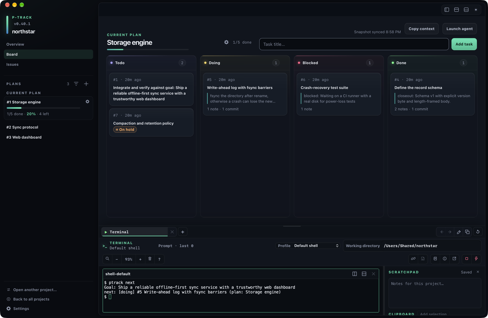
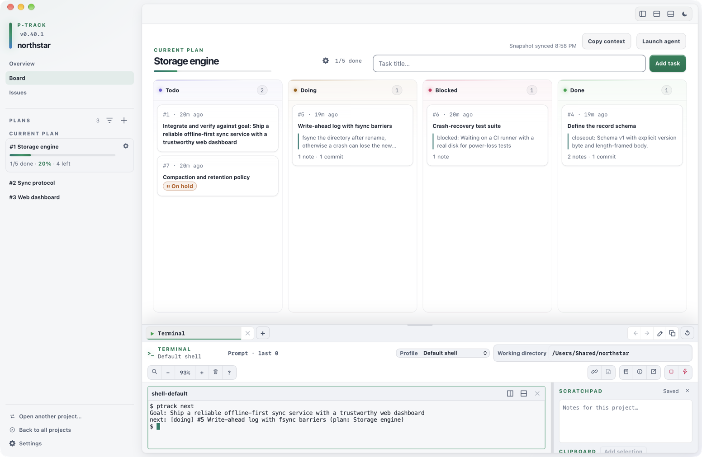

Local project tracking for coding agents
Keep the plan. Pass the context.
p-track stores your goal, plans, tasks, issues, and notes in the repository. Any agent—or you—can restore a short resume digest and continue the work. One executable ships the desktop app, a terminal dashboard, and the CLI. No account, no server.
Download the latest release for macOS, Windows, or Linux.


What it does
- Remember
Durable project record
Goal, rolling summary, milestones, plans, tasks, issues, notes, and linked commits live in
.ptrack/inside the repo. - Resume
Agent hand-off
ptrack contextprints a bounded digest;ptrack nextpicks the next task. Also served over MCP. - Gate
Honest “done”
Closing a task needs a summary and a linked commit. One task in progress at a time; plans end with an integrate-and-verify task.
- Observe
Desktop workspace
Board, issues, Git state, and registered agent runs in one window per project.
- Run
Terminal dock
Tabs, splits, search, profiles, and pop-out windows for shells and agent CLIs at the project root.
- Remote
TUI and CLI
Over SSH,
ptrackopens a full-screen dashboard on the same database. Every read command has--json.
Quick start
cd your-project
ptrack init --goal "Ship the widget service"
ptrack plan add "Build the storage layer"
ptrack plan use 1
ptrack task add "Define the storage schema" --plan 1
ptrack gui # desktop workspace
ptrack # terminal dashboard
ptrack context # what an agent reads first